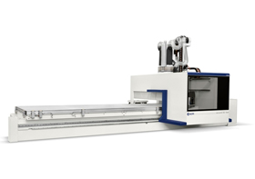
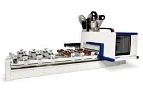
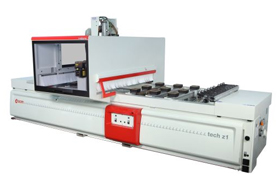
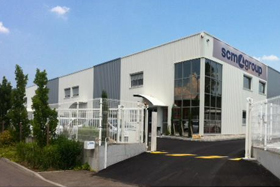
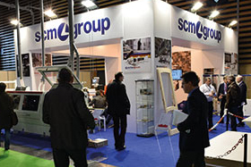

ACCORD 50 FX : LE 5 AXES QUI LIBERE LE MOUVEMENT
Accord 50 FX est le nouveau centre d'usinage à contrôle numérique conçu pour des productions sans limites de forme ou de matériau.

UNE TECHNOLOGIE INNOVANTE
La course élevée de l'axe vertical permet d'usiner des pièces jusqu'à 500 mm de haut, aussi bien sur la face supérieure que sur les faces latérales, en utilisant des outils même de grandes dimensions.
UNE TECHNOLOGIE AU TOP
Précision et finition au niveau maximum sur l'ensemble de la zone d'usinage, grâce à un groupe opérateur à 5 axes caractérisé par une puissance et un encombrement réduit:
17 kW et une vitesse de rotation maximale de 24.000 t/min.
D'excellentes prestations qui font du modèle Accord 50 FX la meilleure solution aussi bien pour les fraisages avec de gros enlèvements de matière que pour les profilages à haute vitesse.
Un plan de travail multifonction adapté à n'importe quelle exigence de référence et blocage de la pièce. La structure rigide en aluminium garantit une parfaite planéité dans le temps.
Un plan de travail automatique “MATIC” géré directement par le logiciel Xilog Maestro présent sur la machine, qui permet d'effectuer un réglage complet en quelques secondes.
UNE TECHNOLOGIE INTELLIGENTE
La suite logicielle Xilog Maestro, développée par SCM, rend la programmation simple, facile et intuitive.
Le simultateur Maestro ProView permet le calcul des coûts de production et une meilleure efficacité productive, grâce à la visualisation, sur un PC de bureau, des aperçus des usinages à réaliser sur la machine.
Possibilité d'exécuter des fraisages et des perçages jusqu'à 500 mm de haut pour différents secteurs d'activité: du simple panneau, aux panneaux en forme multi-strates, en passant par des éléments en bois massif, plastique, composites, résines, alliages légers, et les applications des services prototypes, modelage et impression.
DU NOUVEAU POUR LES MENUISIERS !
Accord 25 FX, best seller de la gamme des centres d'usinage Accord FX dédiés à l'usinage du massif, s'enrichit de nouvelles options spécifiques pour le secteur de la menuiserie.

Dans la construction moderne, les exigences d'efficacité énergétique des bâtiments imposent des sections d'usinage plus importantes pour les portes et les fenêtres.
Pour les menuisiers, cela se traduit par la nécessité d'usiner différentes typologies de profils.
Scm propose le nouveau centre d'usinage Accord 25 FX en mesure de satisfaire les exigences actuelles du secteur, grâce aux nouveaux étaux de blocage de hauteur 145 mm avec une course verticale majorée jusqu'à 70 mm.
La nouvelle distance entre le plan d'appui de la pièce et la barre mobile sur laquelle coulisse le dispositif de blocage permet d'utiliser les outils à double profil sans problèmes de collision avec les autres éléments de la machine.
Le nouveau système de blocage permet l'usinage d'éléments de différentes épaisseurs (de 60 à 120 mm) sans la nécessité d'opérations de réglage manuel.
Ces prestations alliées à la capacité maximum des magasins outils (jusqu'à 44 positions) permettent de réaliser de nombreux profils sans avoir besoin de ré-équiper la machine.
- Moins de changement d'outils
- Moins de risque d'erreur due aux réglages manuels
- Plus besoin de temps d'équipement
Ces trois points déterminent la réduction du temps d'exécution de la pièce, donc une plus grande productivité de la machine.
NOUVEAU CENTRE D'USINAGE TECH Z1 PRO
Pensée pour toutes les menuiseries qui ont un espace limité, Tech Z1 pro est la solution idéale pour les producteurs de mobilier sur mesure et pour l’usinage de panneau.

QUALITE D’USINAGE SANS EGAL : PLANS TVN
Finition impeccable avec les nouveaux plans caractérisés par des ventouses plus grandes avec blocage mécanique en position (brevet SCM) pour une tenue de la pièce 30% supérieure à n’importe quelle solution offerte par le marché.
CONFIGURATIONS INFINIES : PLANS TUBELESS
Possibilité d’équiper le plan de travail avec jusqu’à 8 ventouses, même différentes entre elles, pour satisfaire n’importe quelle nécessité d’utilisation.
AUCUNE ERREUR DANS LE POSITIONNEMENT DES PANNEAUX : BUTEES ESCAMOTABLES.
Les butées escamotables intégrées dans la barre sont encore plus robustes et stables dans le temps. La seconde rangée de butées est également disponibles : idéales pour l’usinage de pièces de petites dimensions.
- L’union parfaite entre sécurité et productivité :« BUMPERS » et protections « PRO-SPACE »
Ce système permet de profiter pleinement des potentialités des centres d’usinage. Les protections PRO-SPACE réduisent notoirement l’encombrement de la machine et permettent un libre-accès également par l’arrière de la machine. - Réduction des temps d’usinage avec les systèmes de changement outils qui réduisent de 25% le cycle d’usinage
Disponibilité aussi bien du magasin TR10, étudié pour les outils de grandes dimensions, que de la version R4 montée à bord du groupe opérateur. - Excellentes prestations qui durent dans le temps avec le nouveau groupe de perçage pratiquement indestructible
Capable de travailler jusqu’à 8.000 tours avec ses 12 mandrins verticaux et 6 mandrins horizontaux. Il dispose, en outre, d’une lame intégrée, diamètre 125 mm, pour les usinages sur l’axe X. - « XILOG MAESTRO » : l’avantage d’avoir un logiciel simple et rapide
Conception facilitée d’éléments tridimensionnels grâce à la large bibliothèque d’applications graphiques pré-établies.
SCM GROUPE FRANCE EST NE !
SCM GROUP FRANCE s'est installée début juin 2014 dans ses nouveaux locaux à Vourles, tout près de Lyon. Elle dispose d'un bâtiment de plus de 700 m² composé de bureaux et d'un showroom de 350 m².

Le nouveau siège de SCM Group France est la première étape de la stratégie de développement et de renforcement commercial que le Groupe entend mener dans les prochains mois. L'inauguration de nouveau siège, avec la présentation du showroom et des technologies de pointe pour le perçage-fraisage, le plaquage ainsi que les machines classiques qui y sont exposées, est prévue courant 2015.
Ainsi, les machines les plus représentatives du marché seront visibles au sein de SCM Group France. Parmi celles-ci, on notera le centre d'usinage 5 axes multifonction haut de gamme de marque Morbidelli modèle Author M400. Les technologies de plaquage seront également présentées avec le modèle SCM K800 qui est une machine entièrement gérée de façon électronique et équipée du rectificateur RT-E pour une ligne de jonction parfaite du chant. En outre, des machines de la gamme L'invincibile, qui représente le top des machines classiques proposées par SCM, seront exposées. Celles-ci concentrent des solutions technologiques de pointe, fruit d'année d'expérience, de recherche technologique et du génie italien.
La filiale française a été la première des 19 filiales du Groupe SCM installées à l'étranger en 1976.
Le Groupe SCM, né en 1952, est leader dans la conception, la production et la distribution de solutions technologiques avancées pour l'usinage du bois, du verre, du plastique, du marbre, du métal et de matériaux composites avec des marques spécialisées sur des technologies spécifiques. Le groupe compte en outre des centres d'excellence spécialisés dans les composants industriels, et est présent sur les cinq continents depuis plus de 60 ans.
SCM "PORTES ET FENETRES" : LE BILAN !
Organisées du 5 au 7 février 2015, au siège de la société SCM à Rimini, les « Journées Techniques – Portes et Fenêtres » ont réuni plus de 300 entreprises de menuiserie.

La manifestation a attiré aussi bien des entreprises artisanales désireuses de découvrir la technologie du contrôle numérique que les grandes entreprises intéressées par des volumes de production plus élevés et de nouvelles finitions.
Les visiteurs, venus d'Europe, des Etats-Unis, du Japon, de Malaisie et d'Afrique du Nord, ont pu découvrir notamment le nouveau centre d'usinage Accord 25 FX, les possibilités offertes par les modules du logiciel Xilog Maestro et les nouveautés en ponçage et finition : Sandya 900 et Dmc « System ».